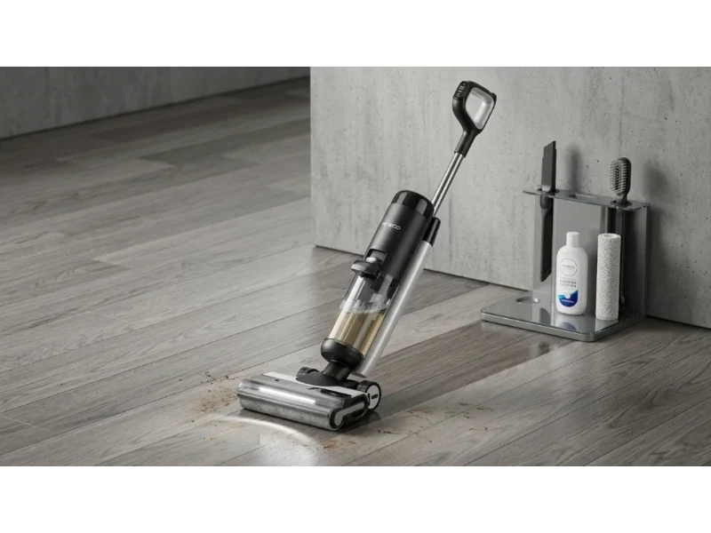
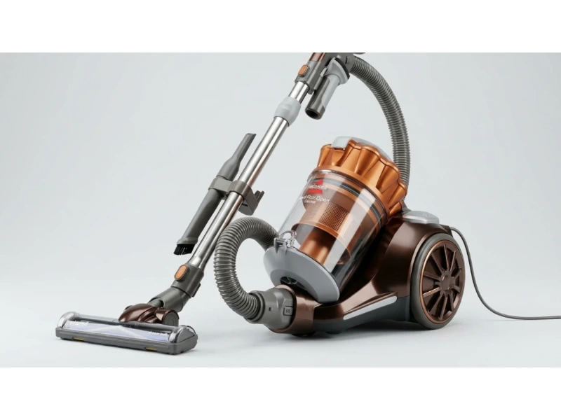
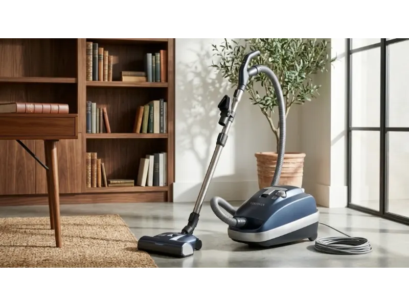

Hardwood floors look great when they are clean, but keeping them that way is not always simple. Dust, pet hair, and fine particles settle quickly and often stay invisible until light hits them. In many homes, the floor looks clean at first glance but still feels slightly dusty under bare feet. That's usually where the right vacuum makes a real difference.
Choosing a vacuum for hardwood floors is not just about suction power. It's about how gently it treats the surface, how well it captures fine dust, and whether it prevents scratches or scattering debris. Some models are built for carpets and struggle on wood, while others are designed specifically to glide smoothly and clean deeply without damage.
This guide breaks down top-performing vacuums for hardwood floors based on real-world usability, cleaning performance, and features that actually matter in daily use.
Top 7 Best Vacuums for Hardwood Floors
Hardwood floor vacuums are designed to clean smooth surfaces without scratching, scattering debris, or leaving residue behind. The best options combine soft roller technology, strong suction control, and lightweight handling so users can clean efficiently without damaging expensive flooring over time. Here is the list of top 7 best vacuums for hardwood floors.
- Dyson V15 Detect — Best Overall for Hardwood Floors
- Shark PowerDetect Cordless — Best Value for Pet Hair
- Miele Classic C1 Pure Suction — Best for Delicate Hardwood
- Tineco Floor One S7 Pro — Best Wet and Dry Combo
- Bissell Hard Floor Expert — Best Budget Canister
- iRobot Roomba j7+ — Best for Automatic Daily Cleaning
- SEBO Airbelt K3 — Best Pro-Grade Alternative
Now let's take a closer look at these vacuums.

1. Dyson V15 Detect — Best Overall for Hardwood Floors
The Dyson V15 Detect focuses on visibility and precision cleaning. It is built for users who want to physically see hidden dust on hardwood floors and remove it with high accuracy. Its laser technology and advanced sensors make it one of the most data-driven cleaning tools available today, well suited for homes where cleanliness needs to be visible, not just assumed.
Key Specs
The standout feature is the Fluffy Optic cleaner head, which uses a green laser angled close to the floor. This reveals microscopic dust that normally goes unnoticed. On hardwood surfaces, this is especially useful because fine particles tend to blend in with the natural texture of wood.
On wooden floors, the soft roller glides smoothly without scratching. It picks up both large debris and fine dust in a single pass. The piezo sensor automatically measures particle size and increases suction when needed, which helps maintain consistent cleaning performance across different room conditions.
In real use, this vacuum performs especially well in rooms with natural light because the laser highlights dust that would otherwise be missed. It is less about basic cleaning and more about precision-level floor care.
- Laser detection reveals microscopic dust invisible to the naked eye
- Soft roller glides without scratching hardwood
- Piezo sensor auto-adjusts suction based on particle size
- 230 AW suction handles both fine dust and large debris
- Premium price point
- Boost mode reduces runtime significantly

2. Shark PowerDetect Cordless — Best Value for Pet Hair
The Shark PowerDetect Cordless focuses on delivering strong hardwood cleaning performance with adaptive technology. It is designed for users who want high efficiency and pet hair control without investing in higher-priced premium brands. For pet households, it balances performance and price in a way few competitors manage at this level.
Key Specs
This model uses DuoClean Detect technology, which combines two roller systems working together. One soft roller handles fine dust while a second fin-style roller manages larger debris. This dual approach helps prevent pushing dirt forward — a common issue on hardwood floors.
On wood surfaces, the vacuum maintains steady contact with the floor. The soft roller reduces the risk of scratches, while the secondary roller ensures larger particles like crumbs or pet food are picked up efficiently. It also performs well along edges where dust tends to collect.
In everyday use, this vacuum stands out for pet households. Hair tends to wrap less around the brush system compared to traditional bristle designs. It also adjusts power based on floor type, which helps maintain battery efficiency during longer cleaning sessions.
- Dual roller system handles fine dust and large debris simultaneously
- Auto floor detection sensors adjust power on the fly
- Less hair wrap than traditional bristle brushes
- Optional auto-empty base for low-maintenance use
- Heavier than slim cordless competitors
- Dock footprint is large

3. Miele Classic C1 Pure Suction — Best for Delicate Hardwood
The Miele Classic C1 Pure Suction is focused on simplicity and long-term reliability. It is not a flashy machine, but it is widely respected for consistent performance on hardwood floors and minimal risk of surface damage. For homes with expensive or delicate hardwood finishes, this controlled suction approach feels safer and more predictable than any feature-heavy competitor.
Key Specs
This model uses the SBD 365-3 floorhead, which relies on natural bristles instead of aggressive rotating brushes. This design allows it to move smoothly across hardwood without scratching or scattering fine dust. The sealed system also helps reduce dust leakage during operation.
On wooden floors, suction control is the key advantage. The vacuum allows users to manually adjust power across six stages, which helps when switching between delicate areas and heavier debris zones.
In long-term use, this vacuum is valued for its durability. It does not rely on complex electronics, which means fewer failures over time. For homes with expensive hardwood flooring, this approach is difficult to beat for consistent, damage-free cleaning.
- Natural bristle floorhead is safe for delicate finishes
- 6-stage suction control for precise power adjustment
- Sealed system prevents fine dust leakage
- No complex electronics — highly durable long term
- Corded design limits range of movement
- No smart features or automation

4. Tineco Floor One S7 Pro — Best Wet and Dry Combo
The Tineco Floor One S7 Pro is built for homes where spills, dust, and sticky marks all happen on the same day. Instead of separating vacuuming and mopping, it combines both into a single smooth cleaning process that saves time and effort. It is especially useful in kitchens and dining areas where one cleaning pass often isn't enough.
Key Specs
This model uses balanced-pressure water flow technology that continuously sprays clean water while collecting dirty water at the same time. The roller stays clean during use, which helps prevent spreading grime across hardwood surfaces.
On wooden floors, the main advantage is controlled moisture. Too much water can damage hardwood, but this system carefully regulates flow so the surface stays slightly damp and dries quickly. It removes sticky residue, pet mess, and fine dust in one pass.
In daily use, this machine works well for kitchens and dining areas where spills are common. It reduces the need for separate mopping sessions, especially in busy households where cleaning time is limited.
- Vacuums and mops in one pass — no separate mopping needed
- Dual tank keeps clean and dirty water completely separate
- Controlled moisture prevents hardwood water damage
- Self-cleaning roller reduces maintenance effort
- Shorter 40-minute runtime
- Not suitable for carpet use

5. Bissell Hard Floor Expert — Best Budget Canister
The Bissell Hard Floor Expert is focused on basic but reliable performance. It does not include advanced smart features, but it handles hardwood floors carefully and consistently, making it a practical choice for smaller homes or apartments where cleaning needs are straightforward and the budget is the primary constraint.
Key Specs
This vacuum uses a specialized hard floor tool with soft bristles that prevent scratching. It also features rubber wheels, which help it move smoothly without leaving marks on polished wood surfaces.
On hardwood floors, the suction is steady and predictable. It is strong enough for dust, crumbs, and pet hair, but not overly aggressive, which helps protect delicate flooring finishes over time.
This model fits well in homes where cleaning needs are simple and regular. It does not overwhelm users with settings or complexity. Instead, it focuses on getting basic hardwood cleaning done without extra cost or maintenance stress.
- Affordable price with solid hardwood-safe performance
- Soft bristle tool prevents surface scratching
- Rubber wheels leave no marks on polished floors
- Easy-empty dustbin with cyclonic separation
- No smart features or auto-adjust suction
- Less effective on thick rugs or carpet areas

6. iRobot Roomba j7+ — Best for Automatic Daily Cleaning
The iRobot Roomba j7+ is built for automation. Instead of manual cleaning, it handles daily dust and debris on its own, making it especially useful for maintaining hardwood floors between deeper cleaning sessions. It is not a replacement for a full-power vacuum, but as a daily maintenance tool it keeps dust levels consistently low with minimal user effort.
Key Specs
It uses dual multi-surface rubber brushes that maintain close contact with the floor. Unlike traditional bristles, rubber brushes help reduce scattering of fine debris, which is important on smooth wooden surfaces.
On hardwood floors, the robot performs best in consistent daily cycles. Its PrecisionVision navigation system helps it avoid cords, shoes, and pet waste that would interrupt cleaning on traditional robot models.
In real homes, this vacuum is most useful as a maintenance tool. It reduces visible dust buildup significantly when used daily and works best in open floor plans where it can move freely without obstruction.
- Fully automatic — cleans without any user interaction
- Rubber rollers prevent debris scattering on hardwood
- PrecisionVision avoids cables, shoes, and pet waste
- App scheduling for hands-free daily maintenance
- Not a substitute for deep cleaning sessions
- Less effective in rooms with heavy clutter

7. SEBO Airbelt K3 — Best Pro-Grade Alternative
The SEBO Airbelt K3 is designed for users who prioritize long-term reliability and deep cleaning performance. It is often chosen by allergy-sensitive households and those who want a more industrial-grade cleaning experience without the complexity of smart features. For homes where air quality matters as much as floor appearance, this is difficult to match.
Key Specs
This model includes a parquet brush designed specifically for hardwood floors. It uses soft edge bristles that allow it to reach corners and tight spaces without scratching or damaging surfaces.
On wooden floors, it delivers very controlled suction combined with strong edge cleaning ability. It removes fine dust along baseboards and corners more effectively than many lightweight cordless models.
In long-term use, it stands out for consistency and build quality. The S-Class hospital-grade filtration captures particles that standard HEPA filters miss, making a noticeable difference for allergy sufferers and households where air quality is a priority.
- S-Class hospital-grade filtration for superior air quality
- Parquet brush head designed specifically for hardwood
- 10-year motor warranty — exceptional long-term durability
- Rubber-coated silent wheels leave no marks on floors
- High upfront cost
- Corded design with no smart or app features
How to Choose a Vacuum for Hardwood Floors
Choosing a vacuum for hardwood floors is not about picking the most powerful machine. It is about balance between gentle cleaning, dust pickup efficiency, and floor safety. Wood reacts differently than carpet — it shows scratches, holds fine dust in gaps, and can lose shine if cleaned too aggressively over time.
1. Soft Roller or Brush Design
Hard bristles can leave micro-scratches over time that build up slowly and dull the floor's finish. Soft rollers or dedicated parquet brushes are safer for regular hardwood cleaning. Look for models that specifically mention a "soft roller" or "hard floor head" as part of their design.
2. Suction Control
Adjustable suction helps prevent debris scattering on smooth surfaces and protects delicate finishes. On hardwood, too much uncontrolled suction can push fine particles across the floor before picking them up. Models with auto-adjustment or manual stage control give you more flexibility.
3. Weight and Movement
Lightweight vacuums are easier to glide across large rooms without fatigue. Heavier models may clean well but if they feel tiring to use, they end up being used less often — which leads to more dust buildup over time. This matters more for larger homes with open floor plans.
4. Dust Visibility Tools
Features like LED lights, laser detection, or sensors help you see what you normally miss. On hardwood, fine particles blend into the wood texture and are easy to overlook. Models with laser detection like the Dyson V15 make a visible difference in rooms with natural light.
5. Filtration System
A sealed filtration system is important for keeping fine dust from escaping back into the air during cleaning. If the vacuum leaks particulates through gaps in the body, the floor may look clean but the room still feels dusty. For allergy-sensitive homes, look for sealed HEPA or S-Class filtration.
Maintenance Tips to Keep Your Vacuum Performing
- Clean filters regularly to maintain airflow and suction strength — clogged filters are the most common cause of performance drops.
- Remove hair or fibers from brush rollers after every few uses, before buildup hardens and reduces roller contact with the floor.
- Empty dust containers before they get completely full — overfilled bins reduce suction and can scatter particles back onto the floor.
- Wipe sensor areas and laser lights with a soft cloth so detection accuracy stays consistent over time.
- Check wheels and floorheads for trapped debris that could scratch hardwood during movement.
- For wet-dry machines like the Tineco Floor One S7 Pro, rinse the water tank after each use and run the self-clean cycle to prevent odor buildup.
- For robot vacuums like the Roomba j7+, empty the auto-empty dock regularly so daily cleaning cycles run without interruption.
Comparison: Top Hardwood Floor Vacuums Side by Side
| Model | Type | Key Feature | Best For | Price Tier |
|---|---|---|---|---|
| Dyson V15 Detect | Cordless Stick | Laser + Piezo detection | Precision cleaning | Premium |
| Shark PowerDetect | Cordless Stick | Dual roller system | Pet hair + value | Upper-mid |
| Miele Classic C1 | Corded Canister | 6-stage suction control | Delicate hardwood | Mid-premium |
| Tineco S7 Pro | Wet-Dry Stick | Dual water tank system | Wet and dry combo | Mid |
| Bissell Hard Floor Expert | Corded Canister | Soft bristle hard floor tool | Budget cleaning | Budget |
| iRobot Roomba j7+ | Robot | PrecisionVision navigation | Daily automation | Mid-premium |
| SEBO Airbelt K3 | Corded Canister | S-Class filtration, parquet brush | Pro-grade durability | Premium |
Frequently Asked Questions
What is the best vacuum for hardwood floors?
The Dyson V15 Detect. Its laser detection reveals fine dust invisible to the naked eye, the soft roller glides without scratching, and the piezo sensor automatically adjusts suction — making it the most complete option for hardwood floor cleaning.
Can vacuums scratch hardwood floors?
Yes, if they use stiff bristle brushes or heavy plastic rollers. Over time, these create micro-scratches that build up and dull the floor's finish. Always look for models with soft rollers, natural bristle heads, or rubber-coated contact points to avoid long-term damage.
Is a robot vacuum good enough for hardwood floors?
For daily maintenance, yes. Models like the Roomba j7+ keep dust levels low with minimal effort. However, they don't replace deep cleaning — for thorough results, a full-power stick or canister vacuum is still needed a few times per week.
Should I use a wet-dry vacuum on hardwood?
Only if the model is specifically designed for hardwood floors with controlled moisture delivery, like the Tineco Floor One S7 Pro. Excess water can warp or damage wood over time. Avoid standard wet-dry shop vacuums or steam cleaners on unsealed hardwood.
How often should I vacuum hardwood floors?
For best results, vacuum every 1–2 days in high-traffic areas and 2–3 times per week in less-used rooms. Pet owners or households with children may need daily vacuuming to prevent fine debris from settling deep into floor gaps.
Final Thoughts
Choosing a vacuum for hardwood floors comes down to how much care your flooring needs and how much effort you want to spend cleaning it. Some homes need deep, controlled cleaning. Others just need light daily maintenance. And some need a mix of both.
If you want something high-tech and detail-focused, the Dyson V15 Detect works well. If you care about value and pet hair control, the Shark PowerDetect Cordless fits better. For delicate or expensive hardwood, the Miele Classic C1 Pure Suction feels safer. If your home needs vacuuming and mopping together, the Tineco Floor One S7 Pro reduces effort significantly. For a simple budget option, the Bissell Hard Floor Expert covers the basics. For hands-free daily maintenance, the Roomba j7+ keeps floors consistently clean. And for professional-level durability and filtration, the SEBO Airbelt K3 is built to last.
Once you match the vacuum to your real cleaning habits, maintaining hardwood floors becomes much easier and more predictable without worrying about damage or constant re-cleaning.